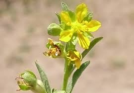

Vahliaceae
Vahliaceae is a small family containing a single genus, Vahlia, comprising small annual or perennial herbs. These plants are characterized by opposite, simple, entire leaves, small yellow or white flowers usually with 5 parts, and an inferior or semi-inferior ovary that develops into a capsule fruit. The family is restricted to Africa and the Indian subcontinent, typically found in seasonally dry habitats. There is no widely accepted common name for the family itself.
Overview
Vahliaceae is a monogeneric family (containing only the genus Vahlia) with about 5-8 species native to Africa and the Indian subcontinent (India, Pakistan, Sri Lanka). These plants are typically small herbs, often found growing in seasonally wet or disturbed places like riverbanks, pans, or open ground, frequently in sandy soils. They are often glandular-hairy.
Historically, the placement of Vahlia was uncertain, often associated with families like Saxifragaceae or Crassulaceae based on morphology. However, modern molecular phylogenetics revealed its unique position within the asterids, leading to its classification in its own distinct order, Vahliales, sister to the large order Solanales.
Economically, the family has little significance, although some species may be used locally in traditional medicine. Its primary importance lies in its unique phylogenetic position, representing an isolated lineage within the lamiid clade.
Quick Facts
- Scientific Name: Vahliaceae
- Common Name: (No widely accepted family name)
- Number of Genera: 1 (Vahlia)
- Number of Species: Approximately 5-8
- Distribution: Africa and the Indian subcontinent
- Evolutionary Group: Eudicots - Asterids - Lamiids - Order Vahliales
Key Characteristics
Growth Form and Habit
Small annual or perennial herbs, sometimes slightly woody at the base. Stems are erect or decumbent, often branched. Plants are frequently covered in glandular hairs.
Leaves
Leaves are simple, opposite, and sessile or shortly petiolate. The leaf margins are entire (smooth). Stipules are absent.
Inflorescence
Flowers are borne solitary in leaf axils or, more commonly, in axillary dichasial cymes (forked clusters).
Flowers
Flowers are small, bisexual, and radially symmetrical (actinomorphic), typically 5-merous (based on a pattern of five), but sometimes 4- to 7-merous.
- Hypanthium: A cup-shaped structure (hypanthium) is present, fused to the ovary.
- Calyx: Sepals (calyx lobes) are persistent on the fruit.
- Corolla: Petals are white or yellowish, usually shorter than the sepals, free, and inserted on the rim of the hypanthium.
- Androecium: Stamens are equal in number to the petals and alternate with them, inserted on an epigynous nectar disc lining the hypanthium.
- Gynoecium: The ovary is inferior or semi-inferior, typically composed of 2 (sometimes 3) fused carpels forming a single locule (chamber). Ovules are numerous, attached to placentas that hang down from the apex of the ovary locule (apical placentation). Styles are typically 2 (sometimes 3), free, with small capitate stigmas.
Fruits and Seeds
The fruit is a small, many-seeded capsule that opens at the apex, often by short valves between the styles or sometimes irregularly. The persistent calyx lobes remain attached to the top of the fruit. Seeds are very small and numerous.
Chemical Characteristics
The family is not known for particularly distinctive chemical compounds, although the presence of glandular hairs suggests production of some volatile or sticky substances. Detailed chemical studies are limited compared to larger families.
Field Identification
Identifying Vahliaceae relies on recognizing the combination of its herbaceous habit, opposite entire leaves, small flowers with an inferior/semi-inferior ovary, and its specific geographic distribution.
Primary Identification Features
- Habit: Small annual or perennial herbs, often glandular-hairy.
- Leaves: Opposite, simple, entire margins, no stipules.
- Flowers: Small (white/yellow), typically 5-merous, radially symmetrical.
- Ovary Position: Inferior or semi-inferior (below or partly below sepals/petals).
- Styles: Typically 2 (sometimes 3), free.
- Fruit: Small capsule opening at the top, crowned by persistent sepals.
- Habitat/Range: Seasonally dry or disturbed habitats in Africa and the Indian subcontinent.
Secondary Identification Features
- Glandular Hairs: Often present on stems and leaves.
- Placentation: Apical (ovules hanging from the top inside the ovary - requires dissection).
- Petals: Often shorter than sepals.
Seasonal Identification Tips
- Growing Season: Plants typically grow, flower, and fruit during wetter periods or following rains in their seasonally dry habitats.
- Dry Season: Annual species die off, leaving seeds. Perennial species may die back to the base.
Common Confusion Points
Small herbs with opposite leaves and small flowers can be confused with members of several other families:
- Caryophyllaceae (Pink family): Often have opposite leaves and 5-merous flowers, but typically have a superior ovary and often notched petals. Fruit is usually a capsule opening by teeth or valves.
- Gentianaceae (Gentian family): Some small herbaceous members have opposite leaves, but flowers often have fused petals (sympetalous corolla) and usually a superior ovary.
- Lythraceae (Loosestrife family): Can have opposite leaves and 4-6 merous flowers, but often have wrinkled petals inserted on the hypanthium rim, and ovary structure/placentation differs.
- Small Saxifragaceae/Crassulaceae: Historically confused, but these families differ significantly in floral structure (often superior ovary, different placentation, often succulent leaves in Crassulaceae) and are phylogenetically distant.
- Rubiaceae (Coffee family): Have opposite leaves, but characteristically possess interpetiolar stipules and usually have fused corollas and inferior ovaries with axile placentation.
The combination of opposite entire leaves (no stipules), inferior/semi-inferior 1-locular ovary with apical placentation, 2 free styles, and capsule fruit is distinctive for Vahliaceae.
Field Guide Quick Reference
Look For:
- Small herb, often glandular-hairy
- Opposite, entire leaves
- No stipules
- Small (white/yellow) 5-merous flowers
- Inferior or semi-inferior ovary
- 2 (or 3) free styles
- Capsule fruit with persistent sepals
- Africa/India region
Key Variations:
- Annual vs. Perennial habit
- Degree of branching
- Density of glandular hairs
- Slight variations in flower size/color
Notable Examples
All species belong to the single genus Vahlia.

Vahlia capensis
(No common name)
A representative species found in southern Africa. It is typically an annual herb, often glandular-hairy, with small yellowish or whitish flowers borne in axillary clusters. Grows in seasonally damp, sandy places.

Vahlia digyna
(No common name)
A species found more widely across Africa and into the Indian subcontinent. Similar in appearance to V. capensis, it is a small, often glandular annual herb favoring seasonally moist habitats. The name 'digyna' refers to the two styles typical of the genus.
Phylogeny and Classification
The classification of Vahliaceae (and its sole genus Vahlia) has been a puzzle for botanists. Based on morphology, it was previously placed near families like Saxifragaceae, Crassulaceae, Escalloniaceae, or even Hydrangeaceae, reflecting similarities in habit or certain floral features like the inferior ovary.
However, DNA sequence data has revolutionized our understanding. Molecular phylogenetics consistently places Vahliaceae within the lamiid clade of asterids, but in a relatively isolated position. It is now recognized as constituting its own order, Vahliales, which is sister to the large and diverse order Solanales (which includes families like Solanaceae, Convolvulaceae, etc.). This placement highlights Vahliaceae as a distinct evolutionary lineage with a unique combination of characteristics.
Position in Plant Phylogeny
- Kingdom: Plantae
- Clade: Angiosperms (Flowering plants)
- Clade: Eudicots
- Clade: Asterids
- Clade: Lamiids
- Order: Vahliales
- Family: Vahliaceae
Evolutionary Significance
Vahliaceae, despite its small size, holds significant evolutionary interest:
- Isolated Lineage: Represents a distinct branch within the lamiids, highlighting the diversity of evolutionary pathways within this major clade.
- Phylogenetic Anchor: Its position as sister to Solanales helps in understanding the deep relationships and character evolution among lamiid orders.
- Unique Morphology: The combination of features (herbaceous habit, opposite entire leaves, inferior/semi-inferior ovary with apical placentation, 2 styles) is unusual within the lamiids and asterids more broadly.
- Biogeography: Its restricted distribution in Africa and India provides clues about historical plant movements and diversification in these regions.